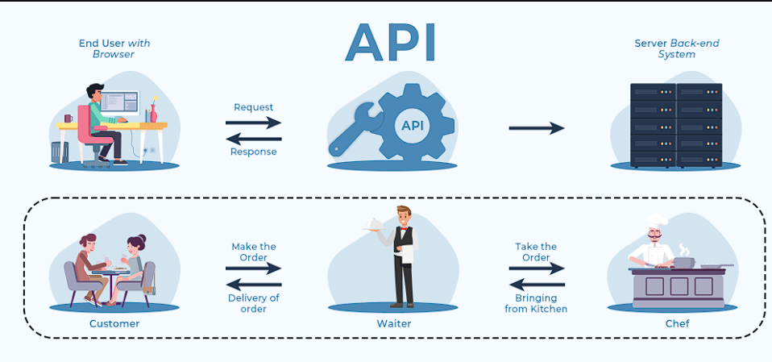

<pre>API :- APPLICATION PROGRAMMING INTERFACE 

Dynamic website :- jis me changes ho sakte he 

static website :- jis me change nhi ho sakte 

API work as bridge between client side and browser side 

A Web API is an application programming interface for the Web.

A Browser API can extend the functionality of a web browser.

A Server API can extend the functionality of a web server.

Type of API : 1. Soap API 
              2.Restfull API 
              3.GraphQL API
    
We learn Restfull API 

so Restfull API me hoti ak crud method  

               CRUD
            1. C means Create 
            2. R means Read 
            3. U means Update 
            5. D means Delete
            
            Create works with post()
            Read works with get()
            Update works with put/patch()
            Delete works with delete()

    we learn learn get propertie in Read  

Get data ko leta he user se 
so usse fetch() likhte he coding me 



</pre>

